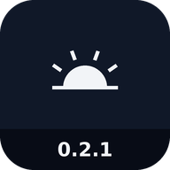

Kokok on the webKokok on Android is designed to ring alarms your assistant sets without a network once they are applied. That needs its setup and permissions, and it is still being validated on a real phone. This page is a companion: plan alarms, see them in your time zone, and use a simple while this tab is open alarm.
New alarm
Alarms
No alarms yet.
Not armed. Arming asks the browser to keep the screen awake while this tab is visible and unlocks sound.
Alarms stay in this browser only (localStorage). The plan export is a plain, unencrypted list for your own reference; it is not the Kokok feed format and does nothing on the phone. Like the app, a late alarm found after you open the tab rings immediately instead of being dropped.
Source (AGPL-3.0) · Android test builds · All apps